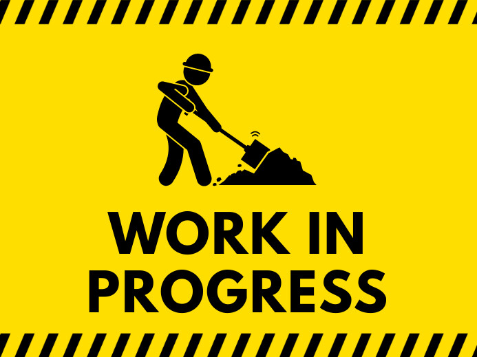
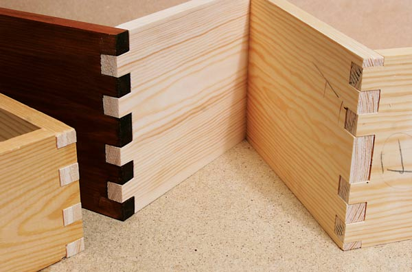
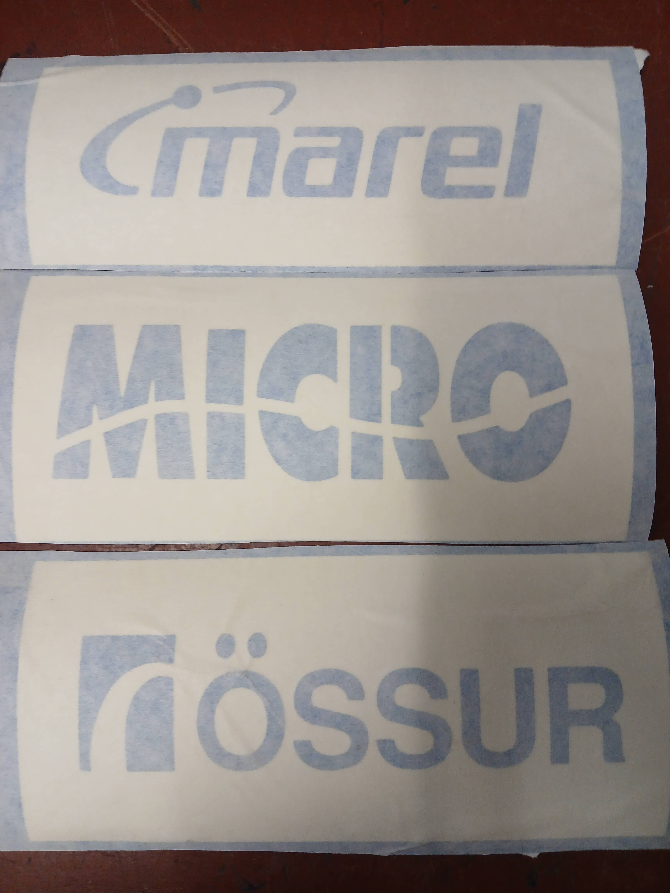
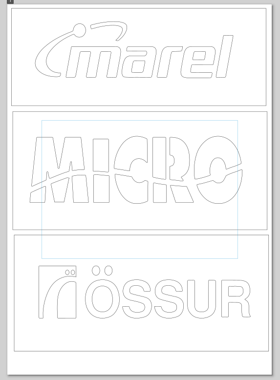

Batteríbox Módel

Módel eru mikilvægur partur af verkfræði og verkfræðilegri hönnun. Mikilvægt er að geta séð hlutinn sem unnið er með á nákvæman og dínamískan máta svo hægt sé að skoða hann, mæla á alla kannta og gera nauðsynlegar breytingar. Að sjálfsögðu er þetta allt gert í tölvum nú til dags og forrit eins og Inventor eða Fusion360 framkvæma þessi verkefni einstaklega vel. Það getur þó orðið þreytandi og jafnvel svolítið 'out of touch' að skoða hlutinn alltaf á rafrænu formi og fyrir stærri verkefni, janfvel þar sem framlag margra einstaklinga og samskipti eru mikilvæg getur verið þess virði að búa til físískt módel af hlutnum sem hægt er að halda á og velta fyrir sér.
Það var hugmyndin í þessu verkefni að gera einmitt þetta fyrir batteríbox Team Spark, sem liggur fyrir að breyta all verulega á næstu árum og margir hópar þurfa að geta 'commentað á'. Auk þess væri gaman að fara með þetta módel á sýningar og að geta sýnt gestum þetta kerfi. Hérna er hugmyndin ekki að framleiða 100% nákvæmt módel uppá form, staðsetningu festipunkta, eða annara opnana, heldur er hugmyndin frekar að halda hlutföllum nokkuð nákvæmum og að geta sett boxið saman án þess að treysta á neitt lím, nagla, skrúfur eða aðrar svoleiðis festingar. Markmiðið er að geta notað eingöngu geirnegldar festingar og herma þannig eftir boxinu sjálfu sem er soðið saman. Segment hólfin á batteríboxinu eru helsta einingin sem ég vill halda nákvæmum, að því leitinu til að ég vill að öll segment hólfin séu jafn stór svo ef okkur tekst að framleið segment í sama skala (mögulega með 3D prentaranum) þá getum við sett þau inn í hvaða hólf sem er og þau passa alltaf jafn vel. Markmiðið er að gera þetta módel úr geirnegldum festingum, þ.e. að við þurfum engar skrúfur, nagla og ekkert lím til að setja þaða saman heldur treystum við á laser skera til að skera út svo nákvæm göt að plöturnar hadist saman á núningi.

Næsta skref er að teikna boxið upp parametrískt, þ.e. þannig að hægt sé að aðlaga nákvæmlega stærðina á 'fingra-götunum' sem fingurnir frá annari plötu þurfa að passa inní. Það er viðbúið að ekki sé einfaldlega hægt að setjast niður og teikna nákvæmlega box sem passa mun saman, heldur þarf að gera tilraunir með lazer skerann og jafnvel skera út plötur aftur ef við viljum eins stíft box og mögulegt er. Í þessu verkefni var Inventor notað til að teikna upp boxið og útkomuna má sjá hér að neðan.

Til að gera þetta box aðlaganlegt að mismunandi botnþykkt eða mismunandi stærð á götum þá notum við parametra innan inventor. Við búum til einn part inní verkefnismöppunni okkar sem er einfaldlega bara fyrir sameiginlegar stærðir og skilgreinum þar stærðirnar: "width" fyrir breidd á fingragötum, "height" fyrir lengd á fingrum sem fara í botnpötu "botn_T" fyrir þykkt á botnplötu, "wall_T" fyrir þykkt á veggjum, "slit" fyrir lengd á rifu fyrir tvo veggi sem skarast og "length" fyrir lengd á fingragati. Raunverulega áskorunin var að skorða línurnar rétt fyrir sérhvert 'scetch' svo þegar parametrum er breytt þá breytast teikningarnar rétt og þar með parturinn og allt heldur áfram að passa saman. Fyrir þetta er eina lausnin að prófa sig áfram, reyna að velja réttar skorður fyrir sérhvern 'feature'. Þegar boxið er síðan sett saman er hægt að breyta parametrum í master_part skjalinu, uppfæra módelið með eldingar_iconinu í Inventor og nota 'interference analizer' tólið í Inventor til að finna vandamál sem skapast. Smám saman vann ég mig einfaldlega í gegnum allar villurnar þangað til hægt var að breyta öllum parametrum án þess að fá neinar villur.


Þegar módelið er komið og teikningar fyrir allar plöturnar þá þurfti að yfirfæra inventor teikningarnar yfir á eitthvað form s.s. pdf eða svg sem lazer skerinn getur lesið og skorið eftir. Fyrir þetta notum við Inkscape og til að æfa okkur í Inkscape og að nota Inkscape þá voru nokkrir límmiðar skornir út í vínilskera. Fundin voru logo hjá nokkrum af styrktaraðilum Team Spark og þau sett í Inkscape. Það var smá maus að finna út úr því hvernig hægt var að vinna úr þeim myndum svo hægt væri að fá logo-in ein og sér á vector formi. Ég ætla heldur ekki að láta eins og ég viti nákvæmlega hvað ég gerði, bara break apart og combine og drop down þangað til þetta virkaði nokkurnveginn. Í lokinn þurfum við að hafa mynd með no-paint, flat-color og 0.02 mm línuþykkt.
Nú þegar við getum við farið að skera út fyrstu plöturnar okkar. Eins og minnst var á það er ekki raunhæft að fyrsta tilraun endi fullkomnlega og til að spara efni þá er mikilvægt að gera tilraunir. Við erum að vinna með 3 mismunandi tegundir af samskeitum. Fyrst eru venjulegar 'figerjoints' sem festast við enda hverrar plötu, síðan eru fingur sem festast í miðja plötu og loksins eru það rifur sem leyfa tveimur plötum að sameinast þvert á hvor aðra. Rifurnar þurfa í rauninni ekki að vera jafn návæmar og hin götin, þar sem þær þurfa ekki að vera 'structural' heldur eru bara þarna veggirnir geti slide-að inn.